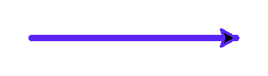
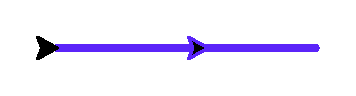
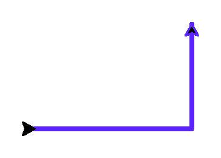

Движение вперёд и назад
Первое, что должна уметь черепашка — двигаться. В этом разделе вы напишете свою первую программу, которая по-настоящему рисует.
Зачем это нужно
Всё, что вы нарисуете дальше — многоугольники, дома, мандалы — строится из одной и той же пары действий: «проехать немного» и «повернуть на какой-то угол». Освоив четыре команды этого раздела, вы получите строительные блоки для всей главы.
Синтаксис
forward(расстояние)— проехать вперёд на указанное число пикселей (короткая форма —fd)backward(расстояние)— проехать назад, не поворачиваясь (короткие формы —bk,back)right(угол)— повернуть по часовой стрелке на угол в градусах (короткая форма —rt)left(угол)— повернуть против часовой стрелки на угол в градусах (короткая форма —lt)
Первый шаг: просто вперёд
import turtle
screen = turtle.Screen()
screen.setup(width=480, height=300)
artist = turtle.Turtle()
artist.pensize(3)
artist.pencolor("#5B24F9")
artist.forward(120)
screen.exitonclick()
Вперёд, потом назад
import turtle
screen = turtle.Screen()
screen.setup(width=480, height=300)
artist = turtle.Turtle()
artist.pensize(3)
artist.pencolor("#5B24F9")
artist.forward(120)
artist.backward(50)
screen.exitonclick()
forward() тоже могут быть отрицательными. forward(-50) и backward(50) делают одно и то же.Первая настоящая программа: буква «Г»
Проедем вперёд, повернём и проедем ещё раз:
import turtle
screen = turtle.Screen()
screen.setup(width=480, height=360)
artist = turtle.Turtle()
artist.pensize(3)
artist.pencolor("#5B24F9")
artist.forward(120)
artist.left(90)
artist.forward(80)
screen.exitonclick()
Разбор по шагам
turtle.Screen()открывает окно для рисования.turtle.Turtle()создаёт саму черепашку — в начале координат, курс направлен вправо.artist.forward(120)— черепашка проезжает 120 пикселей в направлении курса, оставляя линию.artist.left(90)— курс поворачивается на 90° против часовой стрелки.- Второй вызов
forward()едет уже в новом направлении — отсюда и уголок буквы «Г».
Типичная ошибка
right()/left() с движением — кажется, что черепашка должна сместиться в сторону. На самом деле эти команды только поворачивают курс и не двигают черепашку ни на пиксель.Диагностика: если после поворота фигура выглядит «сплющенной» или линии
накладываются друг на друга — скорее всего, вы забыли вызвать forward()
после поворота, либо перепутали местами поворот и движение.
Попробуйте изменить
Измените расстояние 120 на 250 и угол 90 на 45. Перед запуском попробуйте предсказать: в какую сторону теперь «смотрит» черепашка после поворота?
Добавьте третью пару команд left(90) и forward(120) в конец программы. Какая фигура получится?
Современный вариант
В старом коде черепашку часто рисуют без явного объекта — модуль
turtle автоматически создаёт «черепашку по умолчанию».
import turtle
# без явного объекта —
# используется скрытая
# черепашка по умолчанию
turtle.forward(120)
turtle.left(90)
turtle.forward(80)
turtle.done()import turtle
# явный объект — понятно,
# какая черепашка рисует,
# легко добавить вторую
artist = turtle.Turtle()
artist.forward(120)
artist.left(90)
artist.forward(80)
turtle.done()turtle.Turtle(). Он ничего не усложняет, зато сразу готовит вас к главе про объекты и легко масштабируется — если позже понадобится нарисовать сцену из нескольких черепашек, у каждой будет своё имя и своё состояние. Модульные функции (turtle.forward() без объекта) всё ещё встречаются в старом коде и учебниках — знать их полезно, но начинайте привычку сразу с объекта.Что запомнить
forward()/backward()двигают черепашку по прямой;left()/right()только поворачивают курс.- Позиция и курс — это два независимых свойства черепашки.
- Современный стиль — создавать явный объект
turtle.Turtle(), а не полагаться на скрытую черепашку по умолчанию.